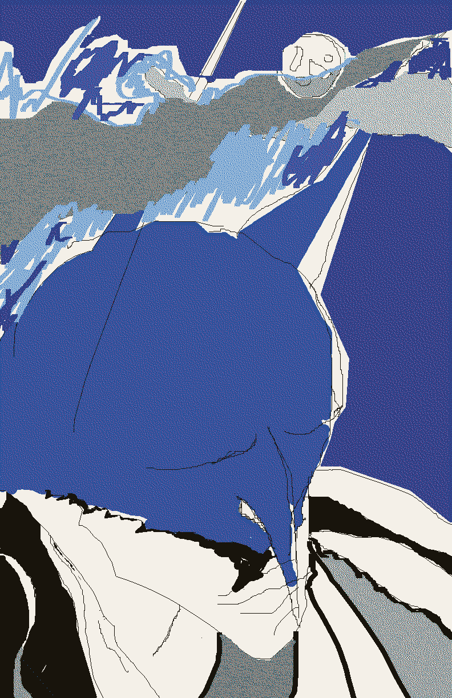

INSTRUCTIONAL ZINES
Instructional Zines 
0 | How to fold a mini-zine (for instructional zines 1 & 2)
1 | Adobe Illustrator #1 (thanks to Ben Korsh)
3 | Fablab Lasercutting #1
4 | Adobe Illustrator #2
5 | FM Synthesis #1
6 | Autodesk Maya 3D #2 (thanks to Andrew Dembling)